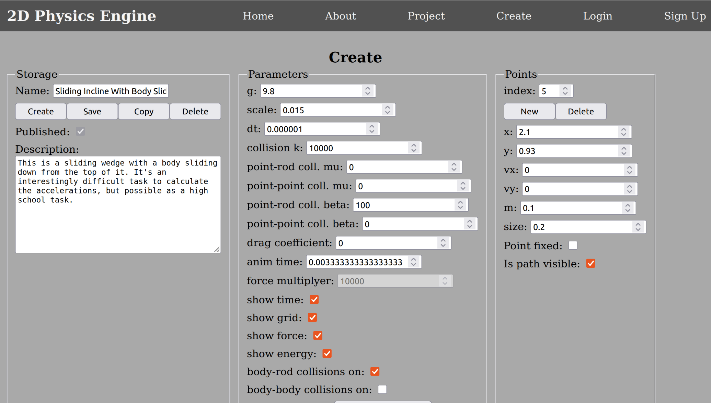
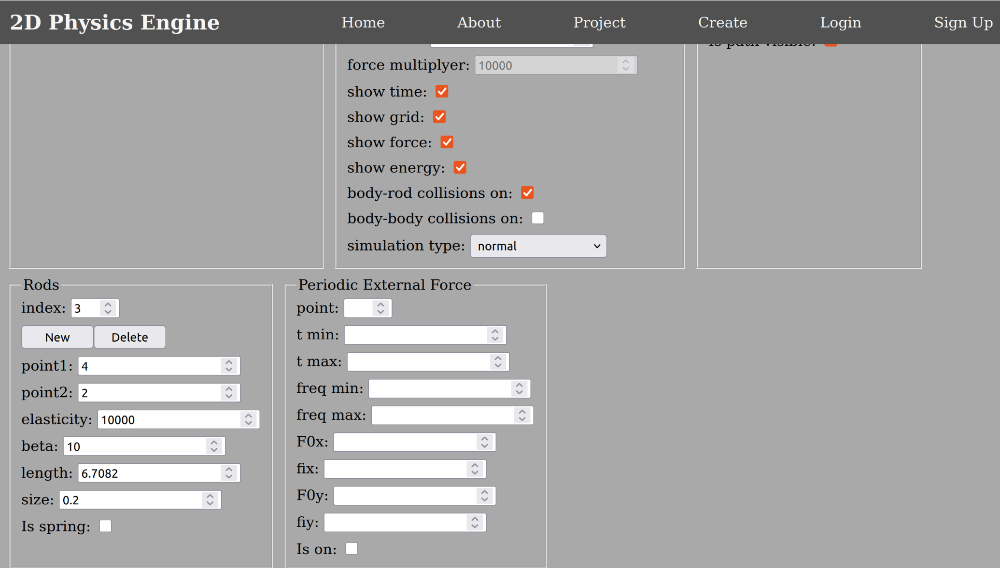
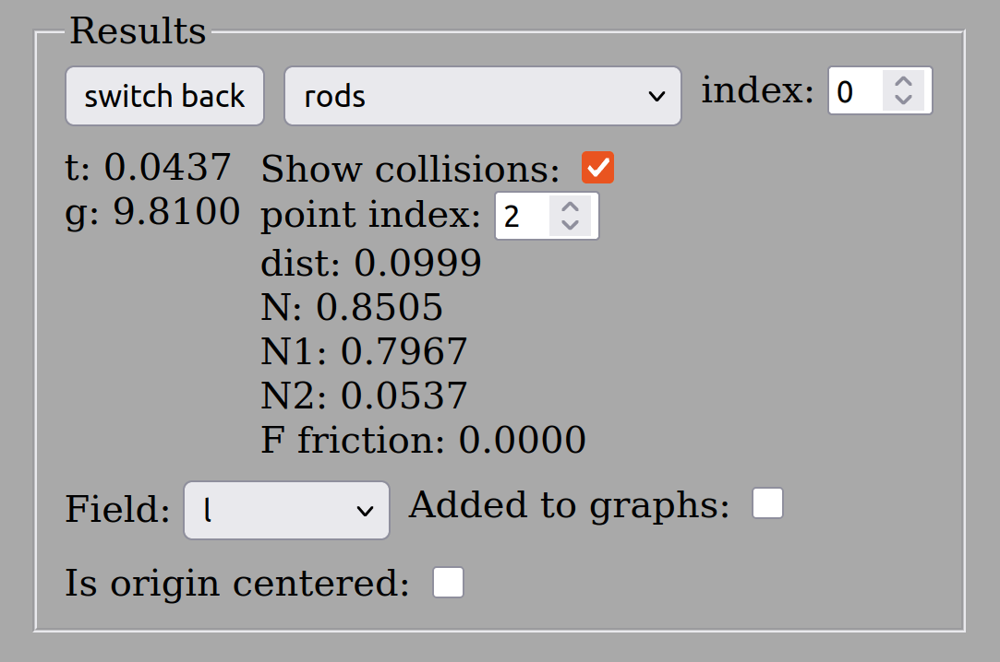

This repository is going to implement a simple physics engine for 2D point mechanics. I am going to use the Euler-Richardson algorithm (RK2) for simplicity. The simple animation is going to go on the browser canvas. The project is going to be part of a mathematics-physics training project for elementary and secondary school pupils.
I recommend first to create an account with your email address form the Sign Up menu. Without creating an account, you still can try the projects and even modify them, but the modifications are local to your computer. You also don’t get refreshed when someone modifies their projects, unlike with an account, because the projects get updated whenever you Log In.
After registration, you need to verify your email and you ready to execute the already existing projects or create your own ones. You are also able to publish your projects and share them with other members.
To execute a project you need to go to the home page, where you can navigate between projects with the Next and Back buttons. Chose your project by clicking on its link then when the page loaded press the Start button. You will see an animation, which is the physics simulation. You may see the elapsed time and energy values at top-right corner of the animation window and you can stop it and reset, by the appropriate buttons.
The simulations use metric units (m, kg, s, N, J, etc.) for normal simulations and astronomical units for the celestial mechanics simulations, which show planetary orbits around the Sun. For these simulations the unit of time is year and the unit of distance is the astronomical unit, which is the Sun-Earth mean distance (about 150 000 000km). The mass unit is the mass of the Sun. In these units the gravitational constant in Newton’s gravity law is about .
You can also see a bunch of check-boxes, which control what it shows in the animation window. You can turn off/on the time and energy values in the top-right corner, the unit grid, the force vectors on the bodies and the trajectories of the bodies.
You can get numerical results by ticking the Results checkbox and you are also able to get time graphs by ticking the Graphs checkbox. The app is able to show 4 different graphs on one page. First you need to pick the maximum 4 different quantities from the numerical results by choosing them with the selector and ticking the Added to graphs check-box. You can remove them from the graph from the similar way with unticking the checkbox.
After the selection, you need to tick the Graphs check-box and run the simulation by clicking the Start button. The graph slowly appears as the time elapses.
To create a project you need to click the Create menu in the top navigation and it opens the page. Here you can edit the current project or press the Create button to create a new one. This leads to an empty world with some predefined values, which are appropriate for most normal simulation projects.
 
You can create new points from the points part with the New button and delete them with the Delete button. All the points have an associated number (index) and changing that, we can navigate between the mass points (bodies). We can also edit the parameters of the point, with the given index. The Point fixed checkbox creates fixed points, which cannot move at all.
The coordinates are in length units and the top-left corner of the simulation window is always the origin. When the x position is growing the point moves to the right, when y is growing it is moving down. The gravity of Earth is pointing down to the y direction.
Caution: The default value for g is 0, so there is no gravity. You must give the 9.8 parameter for g for normal simulations.
The rod is a stiff spring. You can create them by the New button delete them by the Delete button, similarly to points. You can adjust the stiffness and dumping of these. You also need to specify the indexes of the end points, which the rod connects. All rods have their own index and by ticking the Is spring checkbox the graphics will remind for a spring during the simulation.
From these elements you can build complex simulations. You can also create periodic force, which effects some point to simulate resonance phenomenons. The frequency of this force can be adjusted between the minimum and maximum value by the range input on the project page meanwhile you are executing the simulation.
At the end give a name to the project and a short text description mainly for accessible users, who may not be able to see the animations. Do not forget to press the Save button to save the new project.
You can publish your project for the other registered users with ticking the Published checkbox.
Caution: You may get error messages if you are not logged in. The browser still saves into local storage, but this gets overwritten if you log in to your account.
The period of the mathematical pendulum is independent of its amplitude for small amplitudes. What is happening to the period if the amplitude grows and not small at all?
To answer this question and practice a bit all of the above, I will make a sample project. We will make two mathematical pendulums, which can hang independently and we can show and compare their x position, depending the time. This way we can answer the question.
There is a 0.1kg mass point, which can slide on a horizontal surface. It starts in a rest position. There is a 1N constant horizontal force accelerates it for 1s then the friction slows it down until it stops. How much is the achieved speed at the acceleration? How long is the path until it achieves this speed? How long it takes the friction to stop the mass point again? How far the mass point gets from the starting point? The friction coefficient is 0.3.
Let’s solve the problem with a calculation first. The normal force balances the gravity:
The friction force:
The accelerating force:
The acceleration:
The achieved speed:
The length of path at acceleration:
The deceleration from friction:
The elapsed time until stop:
The length of path during deceleration:
The full path:
Let’s make the project:
Caution* This project is for people, who know well the basic trigonometry.
There is an incline, which has 30degrees with the horizontal direction. How far the mass point goes on the incline when its initial speed is 3m/s? How high it gets when it turns back? How much is the magnitude of its acceleration and the sum of the forces effect it? How much is the normal force? The friction is negligible and the mass of the point is 0.1kg.
Let’s first do a calculation and we can verify it by a simulation.
The sum of forces is:
In this case it’s:
The magnitude of acceleration:
The time of deceleration is the same as the time of acceleration,so
The length of path during this time
The achieved height is
We should get these details from a simulation too. Let’s make the
simulation. The first endpoint of the incline will be x0=1m and y0=3m.
Let’s choose the length of the incline l=2m. Let’s calculate the other
endpoint:
Now we calculate the position of the mass point at the start, when
its radius = 0.1m.
We also need to calculate the component of the initial
velocity:
Now we have all the details for making the simulation.
Tip The project runs quite fast, but we can slow it down by changing the dt and anim time parameters in the same ratio. If for example we choose dt=1e-7 and anim time=0.0003333333333 it slows down everything 100 times. We should keep the ratio of these parameters the same as the original setup was.
The red curve is the path length, which changes very slowly around the time, when the body turns its direction of movement. The green v-shaped line is the speed. It goes down to zero and up when the body goes back to its original position. The turning point is when v=0. We see that the values, what we can read from the graph are in consistency with our calculation, although graph readings have limited accuracies.
This is again in full agreement with our calculations.
You can create an account from here, if you do not have one. You just need to fill in a form. You need a valid email address, because you will receive a verification email and you need to click on the link to verify your email address. The form to fill in has the following fields: email, password, confirm psw, first name, last name. The first and last names are optional.
Caution When you are logged in, but getting access denied errors, the validity of your token has expired. In a case like this you must log out at the home page and log in again.
The form has the email and the password fields. You also can get to the sign up page from here if you don’t have an account yet. At successful login you get a confirmation with a button, which redirects you to the home page. There is a link, for the case you have forgotten your password. It will send you an email with a link, which makes you possible to make a new password.
Creating simulation projects means that we specify the general simulation parameters and the initial conditions of all the points and rods, which build up the simulations. Rods are very stiff springs. What kind of forces do we have?
Caution For celestial mechanics simulations you have to choose celestial mechanics for simulation type. The default value is normal simulation, which means experiments either in no gravity or close to the surface of the Earth as we have all got used to it.
Caution For celestial mechanics simulations you may need to specify the appropriate force multiplier. The number of the force in astronomical units can be tiny, like 5e-5, so we need to multiply it to make it visible when you try to visualize it in the simulation or graph.
Here f is the frequency, which is between the min and max values and it can be adjusted real time with a range input, when you run the simulation.
Tip You can add a constant force to a point for a certain amount of time, because f can be zero and the phase factors can make the sin functions 1.
6.Air resistance You can add air resistance to the points with specifying the drag coefficient above 0. It’s usually 0.47 for spherical bodies under normal circumstances. The force, effecting the spherical bodies, is /
is the drag coefficient, usually 0.47 for smooth spheres, although it changes for very high speeds or very low speeds. It also depends on the shape of the bodies, hence the car can be designed to have a low drag coefficient to reduce air resistance. A is the area what the flow “sees”, so for a sphere it’s if the radius is R.
The forms, can be used to define the simulation parameters, the mass points or the rods are pretty straightforward. You need to specify all the points and rods for the simulations. The forms also specify the above parameters and the initial conditions. For celestial mechanics rods are not necessary, because the only important force between the points is gravity.
We still have to mention the Copy and Delete buttons, beside the Save and Create buttons. With the Copy button, we can copy an existing project as our own to modify it. The Delete button can delete our projects.
You navigate to the project page and press the Start button. You can also stop or reset the project with the relevant buttons. The Zoom In and Zoom Out buttons can zoom in and out of the world view, although the origin of the coordinate system stays in the top-left corner. We can turn on and off some visualisations with the checkboxes, like Grid, Time, Force and Energy. The Graph checkbox changes the view to show the graphs instead of the simulation. The Results checkbox is used to show a piece of UI, which shows all the important numerical results and you can also pick the quantities you can see on the graphs.
You normally stop the project by clicking the Stop button and tick the Results checkbox. This opens up a piece of UI, where you can pick an element of the simulation (a point or a rod) or you just get an overview of the simulation parameters, like time or g.  Whatever element you select, it’s going to be red in the simulation view. You can also view the collision and friction forces regarding the selected element. On the image, we can see the Sample Project II numeric results. The rod (incline) and its collision with the 2nd point (the sliding one) has been chosen. We can read the N (normal force) and the F (friction force).
When you go to the Numeric Results you can choose maximum 4 parameters, which can be shown as the function of time on a graph. These can be anything available on the select element, like the x coordinate of the 5th point or the acceleration of the 6th point. It also can be the periodic external force or the normal force between the 0th rod and the 2nd point. When you have chosen the parameters, you can view the graphs by pressing the switch back button and tick the Graphs checkbox. This makes the animation disappear in the simulation window. If you press the Start button, you see the graphs gradually appear as the simulation progresses. The origin is the bottom-left corner, we can magnify by the Zoom In and Zoom Out buttons, but we cannot change the position of the origin, unless we tick on the results page the Is origin centered checkbox. This centres the origin on the y axis, so we can see if a parameter negative.
Caution The path is not going to be recorded when the simulation is drawing the graphs. If you untick the Graphs checkbox you will see inaccurate paths. You must reset and rerun the simulation to see the correct paths.